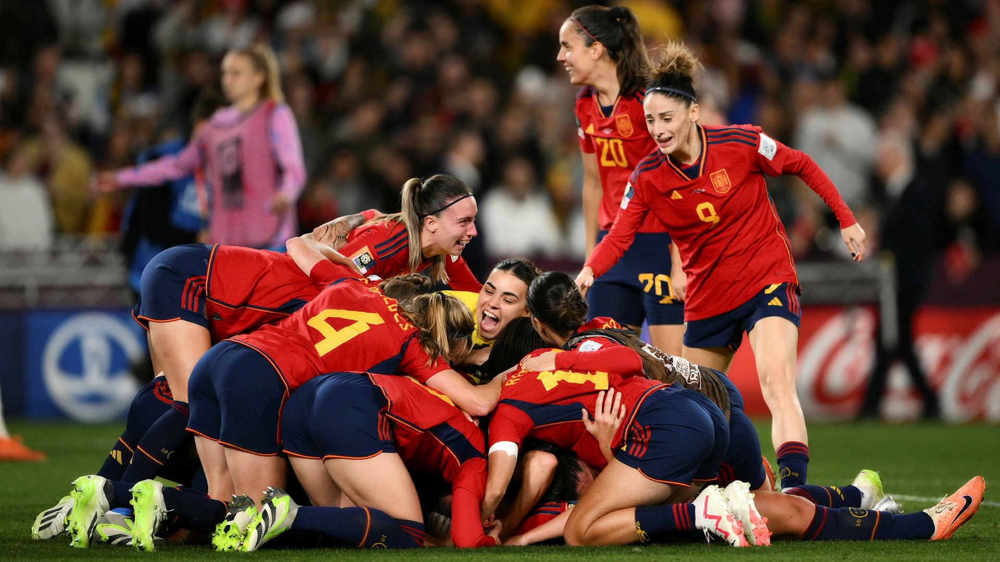

World Magazine
Search
Log In
Magazine
Newsletter
About Us
HOME
SPORTS
CULTURE
POLITICS
TECH
Spain beats England 1-0 in the finals of the world cup
In a historic clash on the global stage of women's football, Spain emerged victorious, securing a remarkable 1-0 win against England in the final of the Women's World Cup.
Sports
By: Mark Test

Spain National Team
Team USA Wins the Biggest Sailing Competition in the World
In a thrilling display of sailing prowess and teamwork, Team USA has emerged victorious at the World Cup, marking a historic achievement in the realm of competitive sailing. The event was a true test of skill and strategy.
Sports
By: Mark Test
USA sailing
Swedish Golfer Ludvig Åberg Wins the DP World Tour Competition in France
In a remarkable and memorable event in the world of golf, Swedish prodigy Ludvig Åberg clinched his inaugural victory on the professional circuit, marking a significant milestone in his burgeoning career.
Sports
By: Mark Test
Ludvig Åberg
 USA sailing
USA sailing
 Ludvig Åberg
Ludvig Åberg